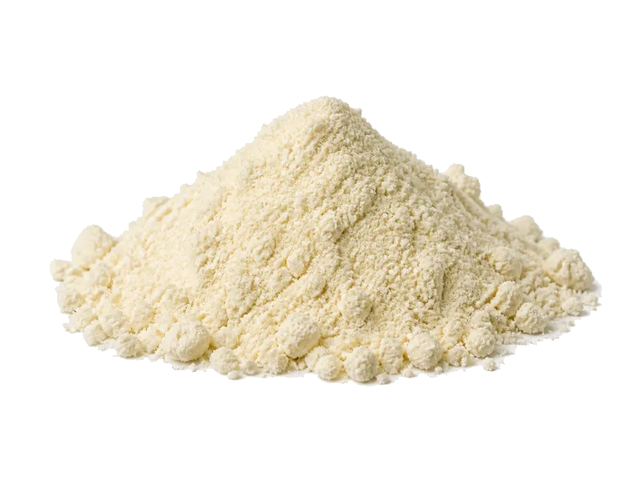

Nabiał i jaja
Koncentrat białka serwatkowego (WPC)
Koncentrat białka serwatkowego (WPC): 75 g białka, 352 kcal, 6 g węglowodanów i 5 g tłuszczu na 100 g. Kategoria: Nabiał i jaja.
Kalorie352 kcalna 100 g
Białko / proteiny75 g
Węglowodany6 g
Tłuszcz5 g
Cena (szac.)~10,70 złza 100 g
Ceny zaktualizowano: sierpień 2026 (szacunek — ceny w popularnych supermarketach)
Porcja: miarka (30g)
| Kalorie | 106 kcal |
|---|---|
| Białko | 22.5 g |
| Węglowodany | 1.8 g |
| Tłuszcz | 1.5 g |
| Cena (szac.) | ~3,21 zł |
Szczegółowe składniki odżywcze na 100 g
| Wartość energetyczna (kalorie) | 352 kcal |
|---|---|
| Białko (proteiny) | 75 g |
| Węglowodany | 6 g |
| Tłuszcz | 5 g |
| Tłuszcze nasycone | 3 g |
| Tłuszcze nienasycone | 2 g |
| Witaminy i minerały (skrót) | Fosfor, Witamina B12, Wapń |
| Współczynnik kcal / 1 g białka | 4.7 |
| Cena produktu (szac. za 100 g) | ~10,70 zł |
| Cena za 100 g białka (szac.) | ~14,27 zł |
Witaminy i minerały na 100 g
Ilość w 100 g produktu oraz orientacyjny % dziennego zapotrzebowania (RDA) dla dorosłej osoby. Żelazo wg normy dla kobiet; sód jako % limitu. Wartości typowe (USDA / tabele żywieniowe / etykiety) — mogą się różnić między markami.
-
Witamina A 30 µg
-
Witamina B1 (tiamina) 0.04 mg
-
Witamina B2 (ryboflawina) 0.2 mg
-
Witamina B5 0.4 mg
-
Witamina B12 1 µg
-
Cholina 15 mg
-
Wapń 400 mg
-
Magnez 80 mg
-
Fosfor 300 mg
-
Potas 500 mg
-
Cynk 3 mg
-
Selen 5 µg
-
Jod 15 µg
-
Sód 200 mg